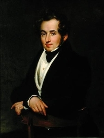
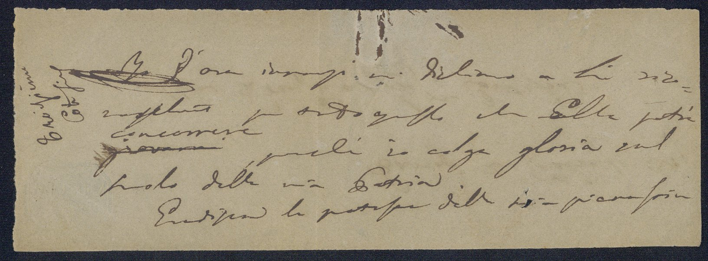

Digital Edition LL1.13.I
Vincenzo Bellini
Retro Lettera ▼ Fronte Lettera
Informazioni sul documento
Vincenzo Bellini a destinatario sconosciuto, in Parigi, 2 Febbraio 1834. Minuta di Lettera.
Autore:Vincenzo Bellini
Destinatario:Destinatario della lettera sconosciuto.
Edizione:Digital edition Giugno 2021
Trascrizione:Trascrizione di Graziella Seminara
Conversione:Conversione TEI P5 di Giovanni Graniero
Formato del documento:1 folio, millimetri: 47 x 135
Descrizione del documento:Lettera in buonissime condizioni fisiche, composta da un solo folio, piegato a metà orizzontalmente, con testo della lettera nel fronte e data e formula di apertura nella parte superiore del retro. Carta sottile senza filigrana, colore beige, inchiostro nero. La lettera presenta alcune piccole macchie di inchiostro nella parte superiore della lettera, e un piccolo buco, entrambi osservabili sia nel fronte che nel retro. Il folio presenta fronte e retro. Il foglio è piegato a metà orizzontalmente con data e formula di apertura nel retro e il corpo della lettera nel fronte.
Il folio presenta una piegatura orizzontale che lo divide a metà orizzontalmente e una piegatura verticale più leggera decentrata a sinistra. Così il folio stesso funge anche da busta con la data e la formula di apertura nella parte superiore del retro.
Timbri:Nel folio retro, nell'angolo superiore sinistro c'è un timbro postale poco visibile con la scritta "WEYNEN"
Informazioni scrittura e annotazioni:Scrittura a mano libera abbastanza leggibile. Il folio retro, nella parte superiore, presenta un'annotazione di seconda mano, anche il folio fronte nella parte sinistra presenta un'annotazione di seconda mano. Una annotazione è probabilmente dovuta a un catalogatore, si trova nel folio retro e presenta una f ed il numero 25 scritti con un pastello blu. Anche l'altra annotazione è probabilmente dovuta a un catalogatore, si trova nel folio fronte e presenta una scritta di due parole illeggibile.
Ubicazione fisica:Museo Belliniano Catania
in esposizione Casa Natale, sala B, vetrina 4, ripiano 1, III,a
Lingua:Italiano di inizio Ottocento.
Ulteriori Informazioni:All'interno del carteggio belliniano (LL), la segnatura LL1.13.I identifica la tredicesima missiva in ordine cronologico del primo sottogruppo, che corrisponde alle lettere scritte da Vincenzo Bellini.
Retro LL1.13.I

Parigi
2: Febbrajo 34:
f25
Mia
Pregsma
[
Preg
<
iati
>
s
<
si
>
ma
]
Sig:ra
[
Signora
]
Contessa
Trascrizione di Graziella Seminara
Conversione:Conversione TEI P5 di Giovanni Graniero
Fronte LL1.13.I

Io d'ora dinnanzi mi dichiaro a
Lei rico
noscente per tutto quello che
Ella
potrà
giovarmi concorrere, perchè io colga gloria sul
suolo della mia Patria.
Gradisca le proteste della mia sincera stima
Trascrizione di Graziella Seminara
Conversione:Conversione TEI P5 di Giovanni Graniero